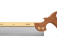
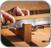

- 
- 
- Click to Purchase
We believe that our dovetail saw are the finest made anywhere. They are based on a British saw made in 1830. Owning one is like having a piece of woodworking history in your shop.
Since dovetailing is a ripping operation, where the kerf is running with the grain, our Dovetail Saw has its teeth filed to a rip profile. Solid milled Brass back, finest quality Swedish Steel blade, Cherry handle and traditional Brass split nut saw bolts.
With 15 points per inch, this Saw strikes an ideal balance between surface finish and speed. Teeth are set at .003" per side for a .026" kerf — narrow to help you cut straight.
15 ppi rip.
Not what you need?